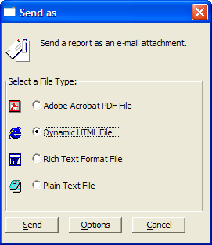

Emailing a Report
Alpha Five supports different techniques for emailing a report.
After Previewing a Report
Display the Report tab of the Control Panel.
Select your report and click Preview.
When the report appears on your screen, click File > Send... . Picture
{kind=link}

Select one of the following formats:
- Adobe Acrobat PDF File - PDF formatted reports can be viewed in browsers and printed. Because the PDF file contains the fonts that were used to compose the report, the print image will be very similar to your original creation. PDF files are typically not suitable for editing.
- Dynamic HTML - HTML formatted reports can be viewed in browsers. Printed HTML reports may show differences from your original report.
- Rich Text Format File - Rich Text Format (RTF) reports can be opened by Microsoft Word and Microsoft Excel. This gives you a way to send content that both preserves formatting and can be edited by the recipient.
- Plain Text File - Plain text files can be opened and edited by various word processing, spreadsheet, and database programs. The main problem with plain text is that it preserves very little formatting information from the original report.
Optionally, click Options to select the email client that you would like to use.
Click Send.
Display the Report tab of the Control Panel.
Select the report you want to send.
Select Report > Send... to display the Print Genie.
Optionally, select a different process
- Preview
- Save to File
Click Next >.
Select one of the following formats (see step 4 above) from the Send As list:
- "Adobe Acrobat PDF File"
- "Dynamic HTML"
- "Rich Text Format File"
- "Plain Text File"
Optionally, select a different email client from the Send Using list.
Optionally, click Test Query to see how many records the report will contain.
Optionally, click Show Xbasic to see the Xbasic code that was generated by the genie. You can copy and paste this code under a button or into a script if you want to reuse it.
Click Finish.
See Also
Supported By
Alpha Five Version 5 and Above